1908年の夏、オランダの画家が赤い樹を描いた。それはまだ、誰が見ても樹だった。
1908年、36歳のピート・モンドリアンピート・モンドリアン（1872–1944）
オランダの画家。本名はピーテル・コルネリス・モンドリアーン。アムステルダム国立美術学校で古典的な絵画教育を受けた後、1911年にパリへ移り、キュビズムを経て完全な抽象へ進んだ。デ・スティル運動の中心人物。はアムステルダムのアトリエで1本の樹を描いていた。古典的な油彩画の訓練を受けた彼は、すでに10年以上プロの画家として活動していたが、当時のオランダ美術界ではまだ無名だった。その絵——のちに『赤い樹（Avond; De rode boom）』と呼ばれる1枚——は、彼のキャリアの中で後戻りのできない転換点になる。
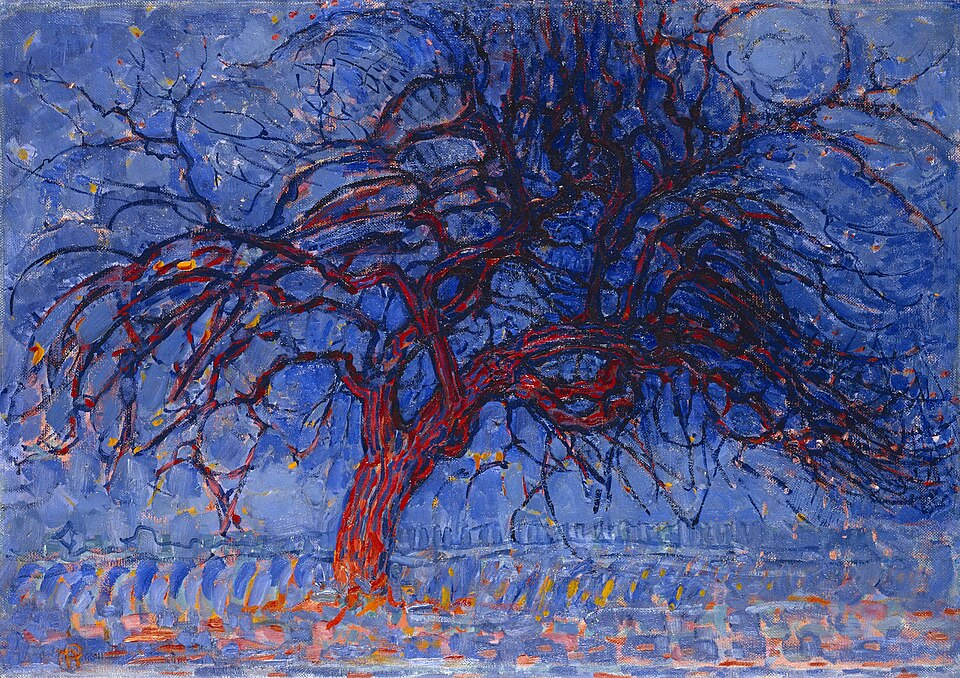
ピート・モンドリアン『赤い樹（Avond; De rode boom）』（1908–10年）｜油彩・カンヴァス、70×99cm｜クンストミュージアム・ハーグ蔵｜モンドリアン還元実験の出発点。赤く燃える枝、捻れた幹、青い夕空——まだ誰が見ても樹だ。だがこのあと、彼は35年かけてこの樹から具象性を剥ぎ取っていく。
この時点のモンドリアンは、まだ「削る画家」ではない。赤く燃える枝はゴッホ的な表現力に満ち、青く染まる夕空はフォーヴィスム的な色彩を持つ。モンドリアンは当時、神智学神智学（Theosophy）
19世紀後半にヘレナ・ブラヴァツキーが創始した神秘主義思想。宗教、哲学、科学を統合し、宇宙の背後にある普遍的な真理を探求することを掲げた。20世紀初頭の画家・音楽家に広範な影響を与えた——モンドリアンの他、カンディンスキー、マレーヴィチらも神智学の会員だった。という神秘主義思想に深く傾倒しており、表面の現象の奥に「普遍的な調和」が隠れていると確信していた。この樹の絵が特別なのは、うまく描けているからではない——この1枚のあとに、もう一つの樹、さらにもう一つの樹、と続いていく連作の第一歩だからだ。彼は同じ主題を繰り返し描きながら、毎回少しずつ削っていった。
ピート・モンドリアン
Pieter Cornelis Mondriaan / 1872–1944
オランダ・アメルスフォールト生まれ。父親は厳格なカルヴァン派教師で、美術は職業として許されなかった。20歳で美術学校に入学、34歳で神智学協会に入会。1911年にパリへ移り住み、キュビズムに衝撃を受ける。以後35年間、「具象 → 幾何学的抽象 → 直線と原色のみの新造形主義 → ニューヨークでのブギウギ」へと一度も後戻りせずに還元を進めた。71歳のときに肺炎で死去、未完の『ヴィクトリー・ブギウギ』を残した。
「削ること」は、モンドリアンにとって技法ではなく信念だった。彼は神智学者の数学者シューンメイケルスM.H.J.シューンメイケルス（1875–1944）
オランダの神智学者・元カトリック司祭・数学者。1915年の著書『世界の新しい像（Het Nieuwe Wereldbeeld）』で「3つの本質的な色は黄・青・赤だけであり、他のすべての色はそこから派生する」と主張した。また、垂直と水平の直交こそが宇宙の根本構造だと論じた。モンドリアンはこの思想を絵画で実践した。の思想に深く影響を受け、現実のあらゆる形・色・線の背後に、宇宙の普遍的な構造が隠れていると信じた。垂直は男性・精神、水平は女性・物質。この二つの交点に調和がある。三原色——黄・青・赤——こそが色の本質であり、他の色はすべて派生にすぎない。これは装飾的な好みではない。哲学的な仮説だった。そしてモンドリアンはその仮説を、35年間の絵画で検証した。
読む前に確認 — よくある誤解
✗ よくある誤解
モンドリアンは「シンプル好き」のミニマリストだった
✓ 実際は
彼のスタイルは美的好みではなく哲学的信念。神秘主義思想（神智学）の実践として直線と原色に到達した。パリのアトリエは自ら黒テープと色紙でグリッドに仕立てた「宇宙の縮図」だった
✗ よくある誤解
直線と原色だけの絵はデザイン装飾の先駆
✓ 実際は
モンドリアンが描こうとしたのは「宇宙の本質」。垂直＝精神、水平＝物質、その交点に普遍の調和——というシューンメイケルスの神秘主義を画布上で証明する試み。装飾は結果にすぎない
✗ よくある誤解
35年かけて同じスタイルを磨いた
✓ 実際は
1908–43の35年で少なくとも6つの段階を通過している。具象 → キュビズム的分解 → ＋/−記号 → 色面とグリッド → 純粋新造形 → ブギウギ。彼は止まらず、最後は自分のルールすら自ら解放した
もう一度、上の『赤い樹』を見てほしい。曲線、厚塗り、赤と青の感情的な対比——そのどれもが、モンドリアンがこのあと35年かけて削ぎ落としていくものだ。具象から始まって、直線と原色だけの世界に到達するまで、画家自身が一段ずつ降りていった階段がある。次のセクションでは、その階段の各段をあなたが降りてみる。どこで「もう樹ではない」と感じるだろうか。
還元スライダー——どこまで削れば、それは別物になるか
下のキャンバスには1本の樹がある。スライダーを右に動かすと、樹は段階的に削減されていく。葉が落ち、枝が幾何学的に分解され、曲線が消え、直線だけになり、最後は矩形と三原色だけの構成になる。6段階、0から5まで。
どこかの段階で、あなたは「もう削りすぎだ」と感じるはずだ。その瞬間にボタンを押してほしい。あなたの境界点と、モンドリアンが35年かけて通過した段階を比較する。
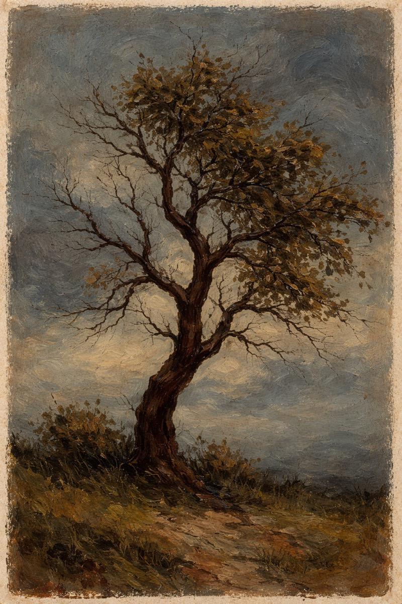
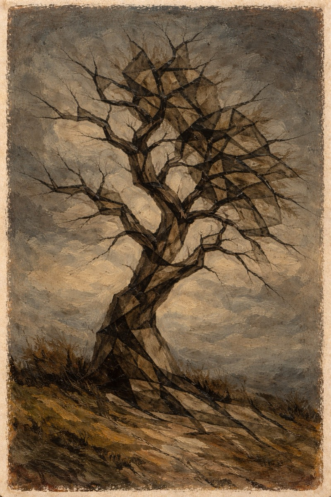
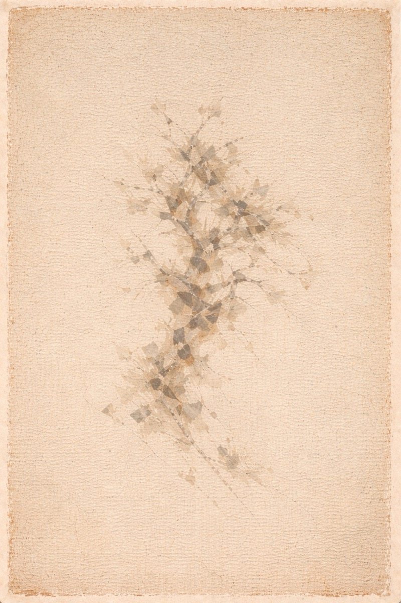
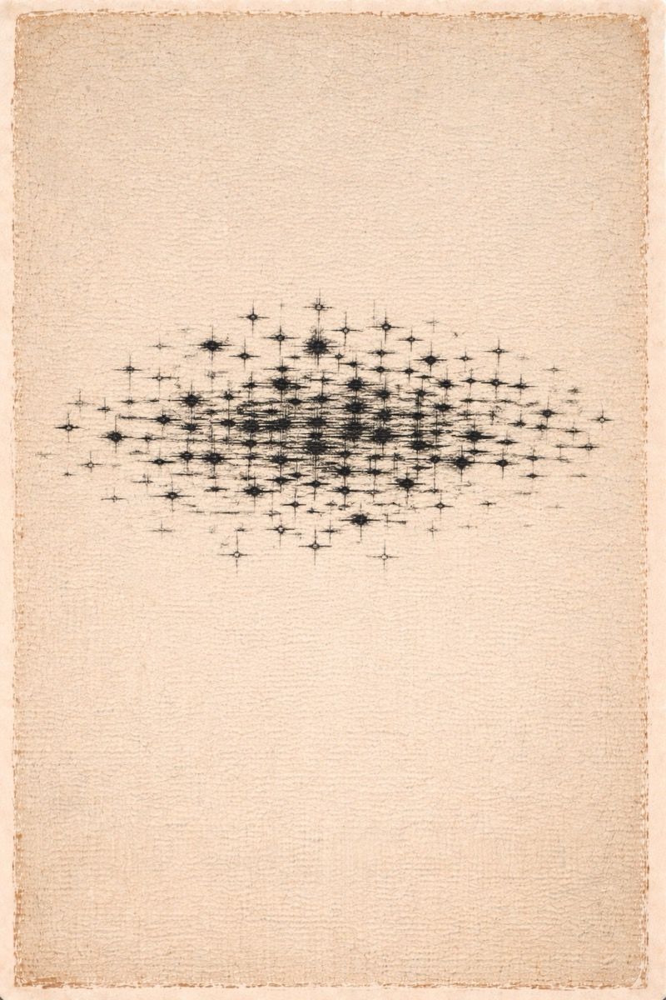
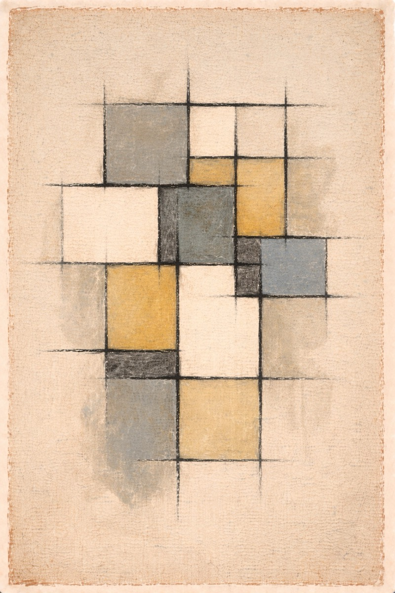
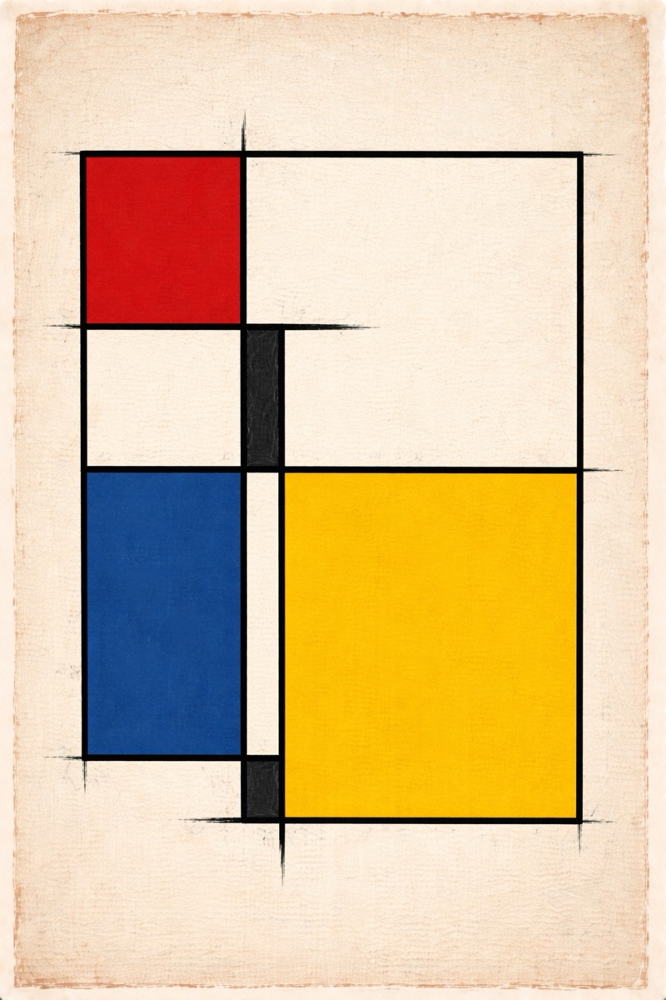
典型的な離脱点は段階2〜3付近（解体〜＋と−）。「まだ削り足りる」と「もう削りすぎ」の境界は、人によって1〜2段階ぶれる。モンドリアン本人は、どの段階でも止まらなかった——それだけが違いだ。
あなたが離脱した地点の先を、モンドリアンは実際の絵画で歩いた。以下の3点がそれぞれ概念段階1、2、3に対応する。樹が段階的に輪郭を失い、＋と−の記号になっていく過程が、画家本人の手で残されている。
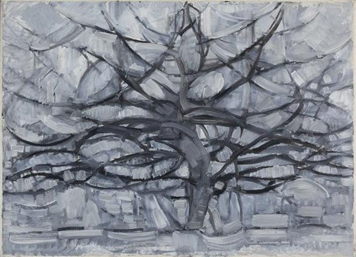
『灰色の木（Gray Tree）』（1911年）｜クンストミュージアム・ハーグ蔵｜段階1：キュビズム化。パリでキュビズムに触れた直後。枝が幾何学的な面に分解されているが、まだ「木」と認識できる。
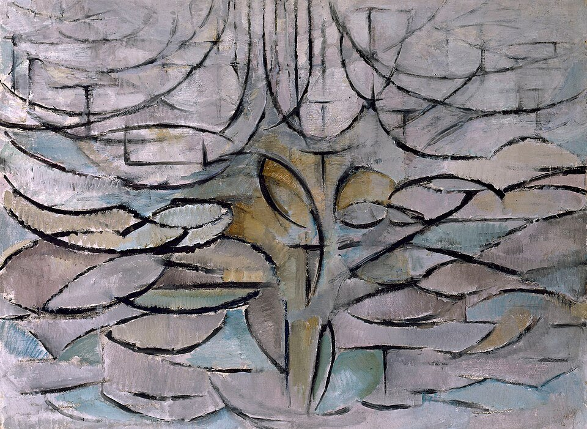
『花咲くリンゴの木（Blossoming Apple Tree）』（1912年）｜クンストミュージアム・ハーグ蔵｜段階2：解体。さらに抽象化。曲線が直線に近づき、木の輪郭がほぼ消える。輪郭線だけが残っている。
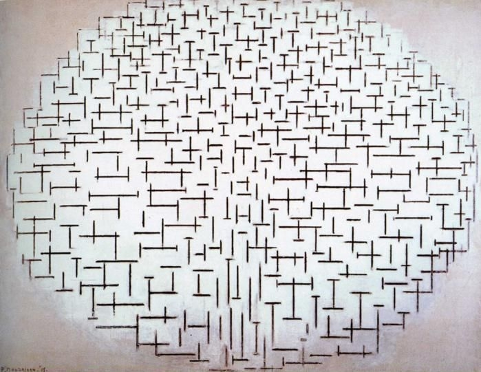
『コンポジション10（桟橋と海）』（1915年）｜油彩・カンヴァス、85×108cm｜クレラー＝ミュラー美術館蔵｜段階3：＋と−。スヘーフェニンヘンの海で描いた。波と桟橋が、短い水平線と垂直線——＋と−の記号——に還元される。もう樹ではないし、海でもない。だが海のリズムはある。
なぜ直線と原色だけで足りると信じられたのか
キュビズムは対象を分解したが、捨てなかった。ギターは断片化されてもギターの破片が残っていた。そして1914年の第一次大戦勃発とともに、キュビズム運動そのものが事実上解体する。戦場で頭部を負傷したブラックは1917年まで絵筆を握れず、ピカソは同年のイタリア旅行でルネサンス絵画に触れ、以後ゆっくりと古典的人物画へ回帰していく。戦後のヨーロッパを覆った「秩序への回帰」（rappel à l'ordre）という潮流のなか、多くの前衛画家が「対象を壊すのはここまで」と判断したのだ。
モンドリアンは逆方向に歩いた。キュビズムが開いた「対象を解体する」という方向を正しいと信じ、止まるどころか「まだ足りない」と判断して、さらに削り続けた。彼の師はキュビズムではなく、シューンメイケルスだった。
シューンメイケルスは1915年に『世界の新しい像（Het Nieuwe Wereldbeeld）』を出版した。元カトリック司祭で、神智学者で、数学者だったこの男は、宇宙の根本構造について3つの命題を立てた。(1) 本質的な色は黄・青・赤の三つだけである。他のすべての色はこの三つから派生する。(2) 本質的な線の方向は垂直と水平の二つだけである。斜めの線は不安定で、偶然的な角度は本質的でない。(3) 垂直と水平の交点に、宇宙の普遍的調和が現れる。
シューンメイケルスの3つの命題：色は3つに、線は2方向に、形は矩形に還元される。モンドリアンはこの命題を絵画で実践した——仮説を画布で証明する、という姿勢で。
モンドリアンはこれを文字通り受け取った。1917年以降、彼の絵から斜めの線、曲線、第2次・第3次の色、形の多様性——そのすべてが消えていく。残るのは黒い線、白い面、黄・青・赤の矩形だけだ。下の2枚はその初期段階——現象から本質への橋渡しの瞬間を捉えた作品だ。
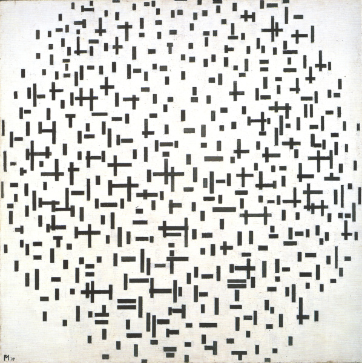
『コンポジション（白黒）』（1917年）｜個人蔵｜色が完全に削ぎ落とされた段階。白い背景に、黒い矩形が規則的ではなくバランスよく配置されている。まだ画面を縁取る黒線はない。
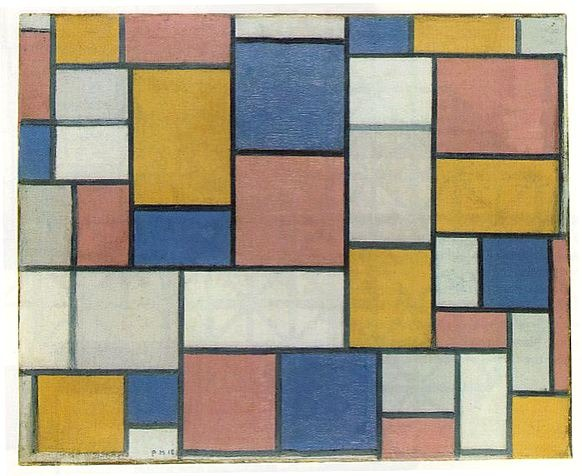
『色面とグレーの線のコンポジション』（1918年）｜油彩・カンヴァス、49×60.5cm｜個人蔵｜色が戻ってきた。ただし鮮やかな三原色ではなく、薄い黄・青・ピンク。グレーの線がゆっくりと画面を分割している。まだ「完成形」ではない。
"I wish to approach truth as closely as is possible, and therefore I abstract everything until I arrive at the fundamental quality of objects."
私は可能な限り真理に近づきたい。だから対象の本質に至るまで、すべてを抽象化する。
— ピート・モンドリアン、手紙（H.P. ブレマーへ、1914年）
35年の削減——1908年の樹から1944年の未完作まで
1908
オランダで『赤い樹』を描く
36歳のモンドリアン、神智学協会に入会（1909年）する前夜。色は表現主義的、形は具象的。ここから35年の還元が始まる。
1911
パリへ移住、キュビズムに衝撃
パリでピカソとブラックのキュビズムを見る。『灰色の木』『花咲くリンゴの木』で樹を段階的に幾何学化していく——だがキュビズムは「途中の駅」だった。
1914–15
スヘーフェニンヘンの海で『桟橋と海』
第一次大戦でオランダに足止めされた画家は、北海沿岸で波と桟橋を見つめ、それを＋と−の記号だけに還元する。曲線が画面から完全に消える瞬間。
1915
シューンメイケルス『世界の新しい像』刊行
3つの本質色（黄・青・赤）と2つの本質方向（垂直・水平）という仮説が活字になる。モンドリアンはそれを画布で実践する「実験」と位置づけた。
1917
デ・スティル運動を結成
テオ・ファン・ドゥースブルフと共に雑誌『De Stijl』を創刊。「直線と原色で構成する純粋抽象」を運動の綱領にする。
1920
『新造形主義』宣言書をパリで発行
自らの方法をNéo-Plasticisme（新造形主義）と命名。黒い直線、白の面、黄・青・赤の矩形——規則を明文化した。
1929–30
『コンポジションII（赤・青・黄）』
純粋新造形主義の完成形。正方形カンヴァスに三原色と白と黒——これ以上削るものはない、という到達点。
1938
ナチス台頭でロンドンへ避難、さらに1940年ニューヨークへ
66歳で二度目の亡命。新しい街、新しい音楽が彼を待っていた。
1942–43
『ブロードウェイ・ブギウギ』——自分のルールを解放する
70歳のモンドリアン、ジャズクラブ「ミントンズ」でブギウギに魅せられる。作品から黒線が消え、無数の小さな色付き矩形が画面を埋める。15年磨いた理論体系より、目の前の画面を信じる直感が勝った。最後の大飛翔。
1944
『ヴィクトリー・ブギウギ』を残して死去
71歳、マンハッタンで肺炎により死去。未完の『ヴィクトリー・ブギウギ』はイーゼルの上に残された——まだ彼は削る途中だった。
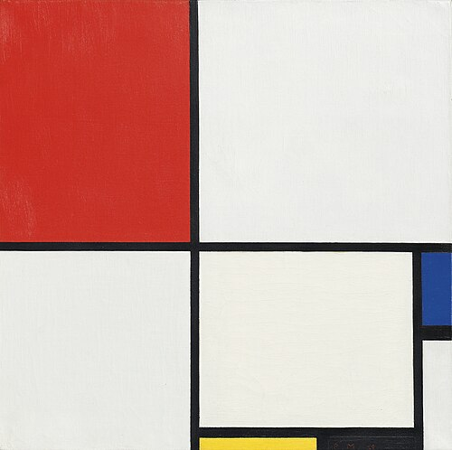
『コンポジションNo.III（赤・青・黄・黒）』（1929年）｜油彩・カンヴァス、50×50.2cm｜個人蔵｜1929年の新造形主義作品。画家はここに21年をかけてたどり着いた。この先にはほとんど削る余地がない——だからこそ、次の10年で彼はまた動き始める。

『コンポジションII（赤・青・黄）』（1930年）｜油彩・カンヴァス、46×46cm｜チューリッヒ美術館蔵｜モンドリアン新造形主義の到達点にして、教科書に載る一枚。黒線、白面、三原色——これ以上削れない、と彼自身が思った地点。樹の連作は1913年で終わっており、この作品は樹を突き詰めた先に生まれたものではない——シューンメイケルスの三原則から直接導かれた、自然の対象を持たない純粋構成だ。
到達点の先で、画家は自分のルールを解放した
1930年の『コンポジションII』で、モンドリアンは還元の到達点に着いた。黒線、白面、黄・青・赤。これ以上何が削れるだろう。ルールは完成している。あとはそのルールの中で組み合わせを変えるだけ——多くの画家はそこで止まる。モンドリアンも10年ほどそこに留まった。
ところが1940年、68歳の彼はニューヨークに渡って新しい音楽に出会う。ブギウギ——1930年代にシカゴで生まれ、ジャズクラブで繰り返しのベースラインに乗せて即興を積み重ねるピアノスタイル。友人に連れて行かれたミントンズ・プレイハウスミントンズ・プレイハウス（Minton's Playhouse）
ニューヨーク・ハーレムのジャズクラブ（1938年開業）。セロニアス・モンク、チャーリー・パーカー、ディジー・ガレスピーら、ビバップの原型を生んだジャムセッションの聖地。モンドリアンは亡命後、ここの常連になった。で、モンドリアンは音楽の中に自分が35年かけて削ぎ落としたはずのもの——リズム、動き、偶然性——を再発見する。
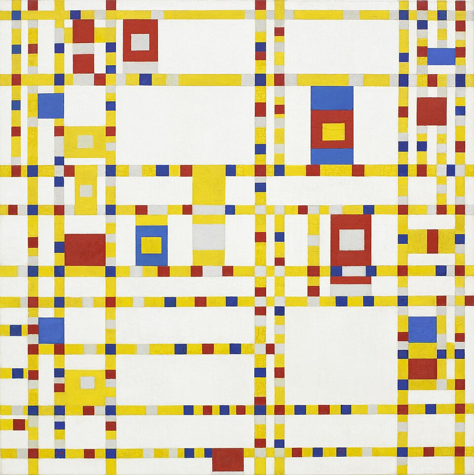
『ブロードウェイ・ブギウギ（Broadway Boogie Woogie）』（1942–43年）｜油彩・カンヴァス、127×127cm｜ニューヨーク近代美術館（MoMA）蔵｜モンドリアン晩年の大飛翔。黒い線が消え、無数の小さな黄・赤・青・白の矩形が画面全体でリズムを刻む。マンハッタンの碁盤目、点滅する信号、ブギウギのベース——すべてが1枚に圧縮されている。
『ブロードウェイ・ブギウギ』では、黒い区切り線が消えている。代わりに黄色いテープの連なりが画面を切り分け、その上に赤・青・白の小さな矩形が不規則な間隔で乗っている。画面は均質ではない——中央に密集があり、端にはまばらな配置がある。モンドリアン自身が15年かけて立てた「黒線＋三原色」のルールが、画家本人の手で拡張されている。彼は70歳にして、自分の到達点を自分で超えた。
このルール解放の瞬間を目撃していた友人がいる。アメリカの抽象画家シャルメイン・フォン・ヴィーガントシャルメイン・フォン・ヴィーガント（1896–1985）
アメリカの抽象画家。晩年のモンドリアンと親交があり、ニューヨークのアトリエに頻繁に出入りした。モンドリアンの制作プロセスを至近距離で記録した数少ない人物。だ。彼女はモンドリアンが赤い面の中心に黄色い矩形を重ねようとするのを見て、驚いて口にした——「でもそれ、あなたの理論に反しますよね?」モンドリアンは少し眺めてから、こう答えた。「うまくいくか? ……うん、うまくいく。」それだけだった。15年間磨き上げた理論体系は、目の前の画面が「うまくいっている」という直感の一言に、あっさり譲った。
詩が完成することはない。ただ放棄されるだけだ。
Un poème n'est jamais achevé, il est abandonné.
— ポール・ヴァレリー（Paul Valéry, 1871–1945）、モンドリアンと同時代の詩人・思想家
これは後退ではない。モンドリアン最大の飛翔だった。「本質に到達した」と思う場所は、常にもう一段先からの視点では「まだ途中」だ。数学では公理系の完全性がゲーデルクルト・ゲーデル（1906–1978）
オーストリア出身の論理学者。1931年に不完全性定理を発表し、十分に強力な形式的体系の中には、その体系内では証明も反証もできない命題が存在することを示した。「本質への完全な到達」という還元主義の前提に、論理の側から制約を課した定理。によって1931年に限界が示された。物理学では素粒子標準模型が完成したあとにも新粒子探索が続いている。底まで削った、と思うたびに、もう一層下が現れる。モンドリアン最後の10年は、その事実を画布で示した実験だった。1944年、彼は『ヴィクトリー・ブギウギ』を描いている途中で肺炎に倒れる。未完。しかしそれは、還元という作業に「完成形」がないことを、奇しくも象徴している。
イヴ・サン・ローラン『モンドリアン・ドレス』（1965年）
A字型のウール・ジャージーに黒線と赤・青・黄の矩形を配置した6着のドレス。新造形主義が高級ファッションに翻訳された瞬間。『ライフ』誌の表紙を飾り、還元の美学を20世紀後半に刻印した。
ディック・ブルーナ『ミッフィー』（1955年〜）
ブルーナはデ・スティルの美学を児童書に翻訳した。黒い輪郭線、三原色＋白、水平と垂直の構図——ミッフィーの造形哲学はモンドリアンの系譜にある。
Webのグリッドシステム
12カラムレイアウト、CSSグリッド、Bootstrap——現代ウェブデザインの骨格は、デ・スティルとバウハウスの「水平・垂直・矩形への還元」を直接引き継いでいる。あなたが今見ているこの記事のレイアウトも、その子孫だ。
ミニマリズム音楽（1960年代〜）
スティーヴ・ライヒ、フィリップ・グラス、テリー・ライリーら——音楽の還元主義はモンドリアンが絵画で行ったことを、音で試みた。同じ音型の反復、和声の削減、リズムの最小化。
モンドリアン自身の宣言書。「なぜ直線と三原色なのか」を画家本人の言葉で読める。わずか14ページのパンフレット。
シューンメイケルスの神智学的宇宙論。モンドリアンに「三原色」「垂直と水平」を直接教えた本。
ワシントン・ナショナル・ギャラリーとMoMAで開かれた大回顧展のカタログ。モンドリアン研究の標準文献。
MoMA所蔵の『ブロードウェイ・ブギウギ』の公式解説。X線分析で明らかになった制作プロセスまで含む。
モンドリアンの経緯はRKD（オランダ美術史研究所）、MoMA、クンストミュージアム・ハーグ、クレラー＝ミュラー美術館の公開資料と、ボワ編の1994年大回顧展カタログに基づいている。掲載絵画はすべてパブリックドメイン（モンドリアン1944年没）。シューンメイケルス思想のモンドリアンへの影響については一部の学者に異論があるが、本人の書簡と当時のデ・スティル運動の論考から、少なくとも重要な触媒であったことは確定している。体験コンテンツはモンドリアンの還元プロセスを概念的に示したものであり、実際の絵画の忠実な再現ではない。